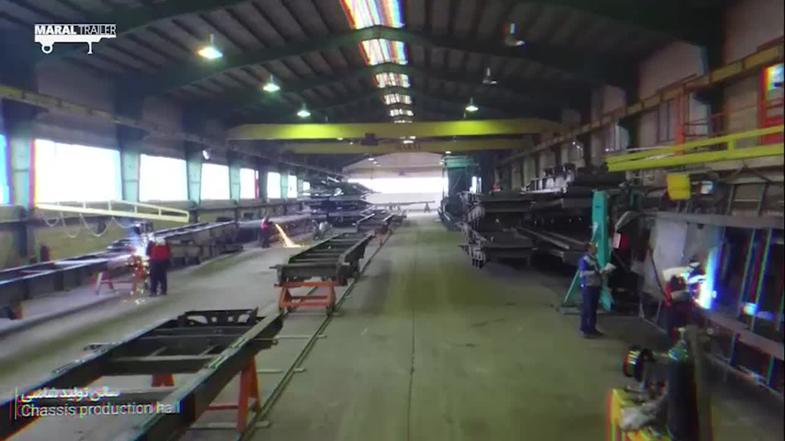
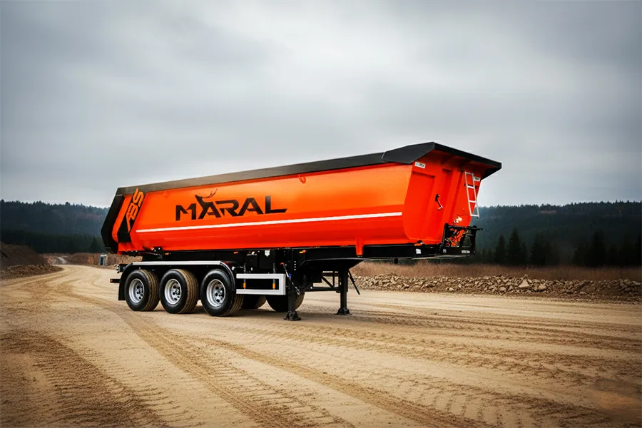
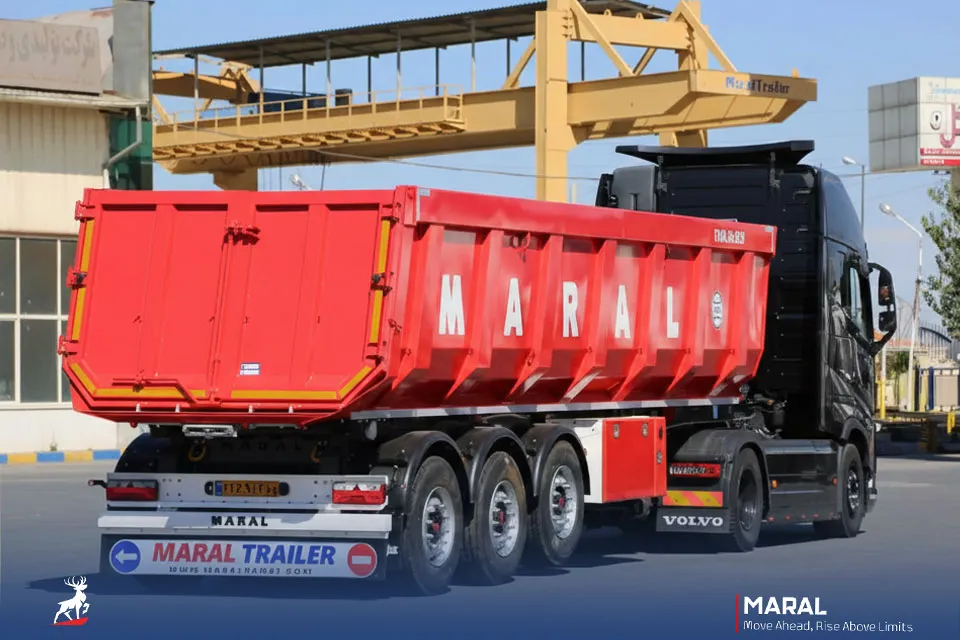
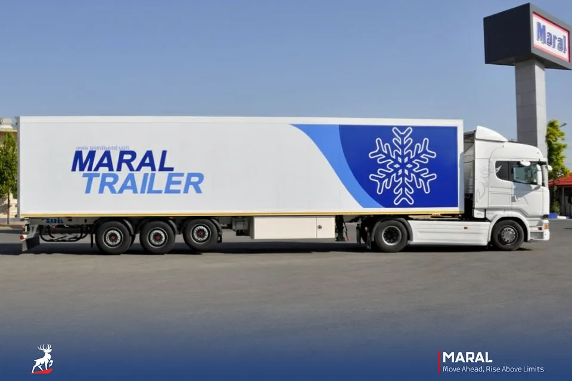
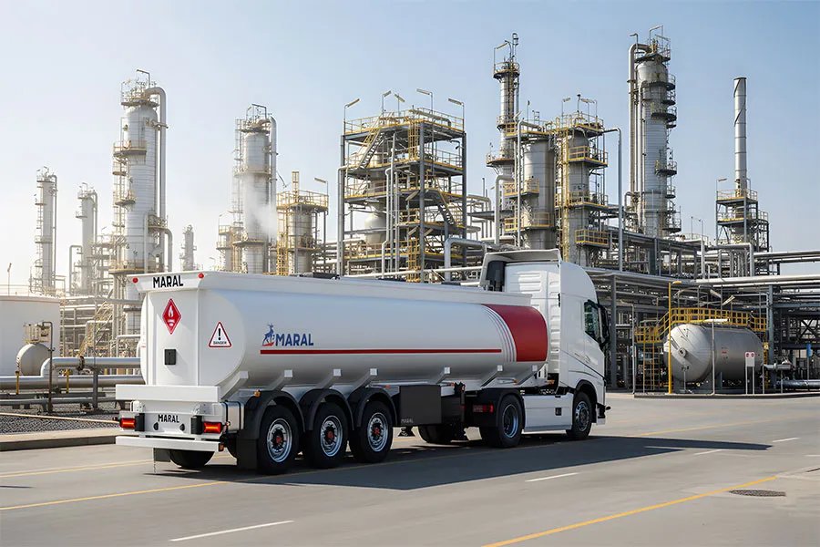
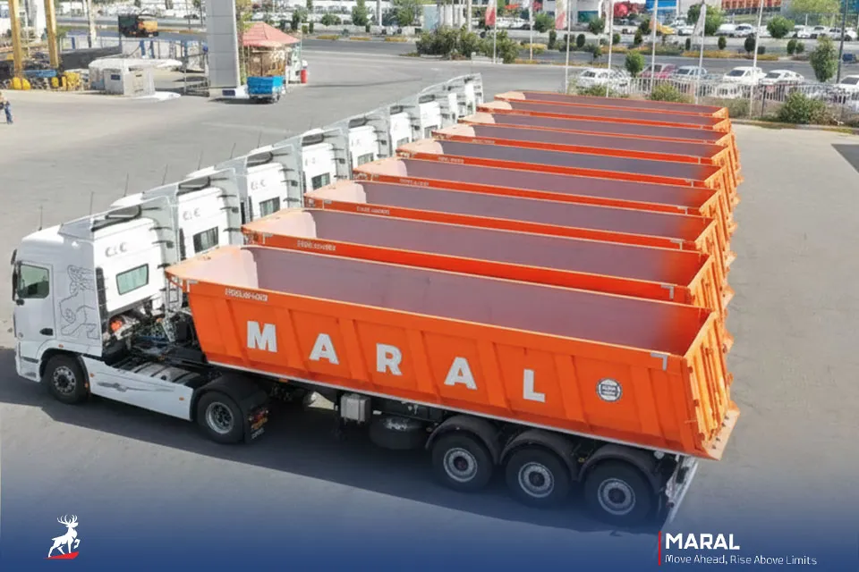

01۱۳۶۸ · ارومیه
همهچیز از زمینی
۶٬۰۰۰ متری شروع شد.
رضا رستمی مارال را در زمینی ۶٬۰۰۰ متری در ارومیه راه انداخت. همان کارگاه امروز بزرگترین کارخانه تریلرسازی ایران است؛ در کیلومتر ۱۰ جاده ارومیه به مهاباد.

6,000 m²بزرگترین کارخانه تریلر ایران





- اندازه گروه در لینکدین
- 1,001–5,000
- کارکنان مستقیم مارال صنعت جاوید
- ۹۰۰
- تیمهای قابل مشاهده
- کیفیت · تحقیق و توسعه · نرمافزار · روابط عمومی
مشاهده در لینکدین